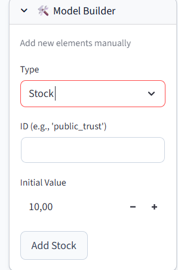
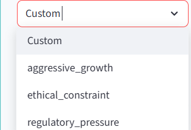

Documentation Technique & Stratégique
"Un Simulateur de Vol pour la Stratégie"
Imaginez que vous pilotez un avion complexe (votre entreprise). Vous ne voulez pas tester une nouvelle manœuvre risquée en plein vol avec de vrais passagers.
Ce système permet de :
Le système repose sur la Dynamique des Systèmes (Stocks & Flux).
L'état du système à un instant T.
{
"reputation_capital": {
"value": 75,
"unit": "index_0_100",
"description": "Confiance du public"
}
}
Ce qui fait varier les stocks (débit). Ils contiennent la logique mathématique.
{
"reputation_decay": {
"from": "reputation_capital",
"to": null,
"formula": "autonomous_lethal_capacity * backlash_coefficient"
}
}

Fig 1. L'interface "Model Builder" permet d'ajouter ces Stocks et Flux manuellement.
L'IA agit comme un architecte qui traduit vos demandes en structure JSON.
Les "Profils" sont des configurations pré-enregistrées pour simuler des stratégies types.

Fig 2. Menu de sélection des profils (Aggressive Growth, Ethical Constraint, etc.).
Le flux de données va du fichier JSON vers l'écran, piloté par le moteur Python.